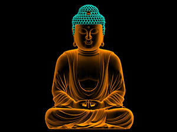
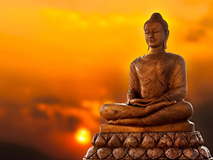
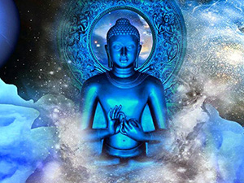
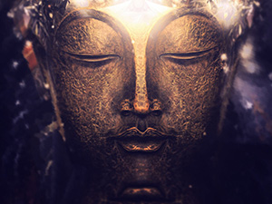

Vipassanā - Insight Awareness
HOW TO MEDITATE
With the hectic pace and demands of modern life, many people feel stressed and over-worked. It often feels like there is just not enough time in the day to get everything done. Our stress and tiredness make us unhappy, impatient and frustrated. It can even affect our health. We are often so busy we feel there is no time to stop and meditate! But meditation actually gives you more time by making your mind calmer and more focused. A simple ten or fifteen minute breathing meditation as explained below can help you to overcome your stress and find some inner peace and balance. …..click to see more

It often feels like there is just not enough time in the day to get everything done. Our stress and tiredness make us unhappy

It often feels like there is just not enough time in the day to get everything done. Our stress and tiredness make us unhappy

It often feels like there is just not enough time in the day to get everything done. Our stress and tiredness make us unhappy

It often feels like there is just not enough time in the day to get everything done. Our stress and tiredness make us unhappy